GE Exclusive Use Only
Direction 5670000, Rev# 1
Optima MR450w 1.5T Service Methods
Module Version 6.0, Version Date 2/10/10
GE Exclusive Use Only |
| ||||
| Do not apply full average power to the system (body hybrid) for intervals more than 5 minutes. | ||||
This procedure explains various methods for troubleshooting problems and isolating failures of components contained within the PGR Cabinet. Components checked in this document include the 1.5T Analogic AN8103 RF Amplifier and the various large and small signal RF coaxial cables associated with each. Processes are also provided for checking the RF output and the integrity of the RF coaxial cable that provides a transmission path from the Exciter in the Pen Cabinet to the PGR Cabinet. A flowchart is provided in Section 3 that the FE will follow during the course of the troubleshooting process. The FE will begin the troubleshooting process at [START], and progress through the flowchart until the problem is isolated or diagnosed. The flowchart will, at certain points, refer the reader back to various sections within the document. The FE will perform the troubleshooting processes documented in those sections and, if the problem is still not isolated or diagnosed, return to the flowchart at the point where the diversion originally occurred.
| Item | Description | Part Number |
| 1 | 100 MHz Scope (equivalent or greater) | 46-183029P61 |
| 2 | RF Power Measurement Kit | 5307511 |
| 3 | 50 ohm, 200 Watt, 30 dB Attenuator (Dummy Load) Note: Only required with above 46-317724G1 Kit. | 46-317724P14 |
| 4 | RF Test Cables Kit | 46-255816G1 |
| 5 | Digital Multimeter (DMM) | 46-194427P49 |
| 6 | TPS RF Service Interface Kit | 46-301927G1 |
| 7 | Wattmeter Kit (optional) | – |
The arrangement of the SRFD2 is such that the top RF Deck is the master, and the bottom RF Deck is the slave. All command, control and status information is handled by the microprocessor on the master RF Deck. The central section of the SRFD2 houses the small signal, front-end splitter and gain adjustment, as well as the high power combiner and couplers that interface to the Universal Power Monitor (UPM).
When the SRFD2 is power cycled, the system message log may show errors, such as the SRFD2 Power Supply Fault. This is due to the high-voltage supply being shutdown, and the communication board inside the amplifier having time to report it as a problem before the entire amplifier is off. There is no actual PSU fault in the SRFD2.
The DCHV red LED on the front panel should be ON when the amplifier is in the “Standby” or “Operate” state. If the amplifier is in the OFF state, the LED will be OFF. The LED is an indicator of the stored charge in the large capacitor banks of the amplifier. It will take some time for the capacitors to discharge, and the LED will gradually fade according to the charge level.
When reading the status code label on the front panel of the SRFD2, a crossed out number means that the change associated with that status code was implemented in the amplifier. For example, a crossed out 5 indicate the SRFD2 has a new communication I/F Board and 4.14 firmware installed. However, it is possible to have status codes that were skipped because of the order of implemented changes.
Power Monitor faults are generated by the UPM, but are reported via fault codes in the RF Amplifier. If the system is experiencing an inordinate number of power monitor faults, investigate the RF Max Output Power first. Make sure the SRFD2 is properly calibrated to 16 kW PEP for body and 2 kW Peak Envelope Power (PEP) for head. If the RF power is correct, use the UPM monitor feature in the UPM tool to verify the UPM is functioning properly.
Failure of the RF fuses in the SRFD2 indicates that a failure of a component occurred elsewhere. The purpose of the fuses is to protect the rest of the RF Deck by not allowing the failure to propagate throughout the system. Replacing a failed fuse will not repair the system. The fuse will fail again because the failed component is still in place. The SRFD2 needs to be returned for proper repair.
The SRFD2 has the ability to automatically bypass certain RF FET failures and run in an “Operate Low” state. Messages in the system log will indicate if this occurred. In this condition, the maximum SRFD2 output drops to about 12 kW PEP, but the system can still be used for scanning with some limitations until the SRFD2 is replaced.
Root Cause: Components inside a Vicor DC-DC converter module are failing.
Symptoms: Loss of communication from Signa if the failure is on the master deck, Cable 22 faults if the failure is on the slave deck, and no fans on the affected deck. (A cable 22 fault alone is likely a cable problem; see Section 3.4 on Fault Code 2254202.)
Solution: There is no field fix for a Vicor failure, but a new Vicor module is available. All SRFD2s are updated with new Vicor converters during repair.
Root Cause: A poor ground connection on any of the high-power RF interconnects can result in ground noise during scanning. The ground noise interferes with the logic and control circuitry of the SRFD2, causing the “Unblank” signal to drop out inside the SRFD2. The loss of the Unblank gate cuts off the RF output power from the amplifier.
Symptoms: System scans fine with no SRFD2 errors, but result in poor IQ images or messages regarding prescan failures because the signal is too small. This will typically occur at higher TG levels. Check by running a manual prescan and increasing the TG as the signal is displayed; signal will drop out at some TG level. Verify this with the dummy load and a scope.
Solution: Check that the nuts that attach the grounds of the high-power connectors to the chassis of the SRFD2 are tight. Check the connectors at both the rear panel of the module and on the subpanels behind the front plate (removed to access the connectors). A drop of red torque seal indicates the connections were checked and sealed before shipment, but the hardware may have loosened.
Illustration 1: Main Body and RF Output Troubleshooting Flowchart
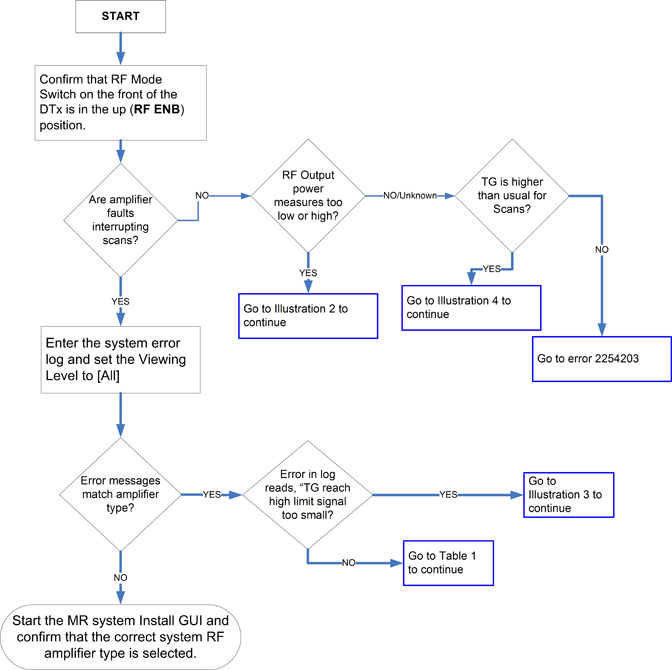
Click on the appropriate Illustration or Table link below that corresponds to the one highlighted in this flowchart:
Illustration 2: Main Body and RF Output Troubleshooting Flowchart (Continued)
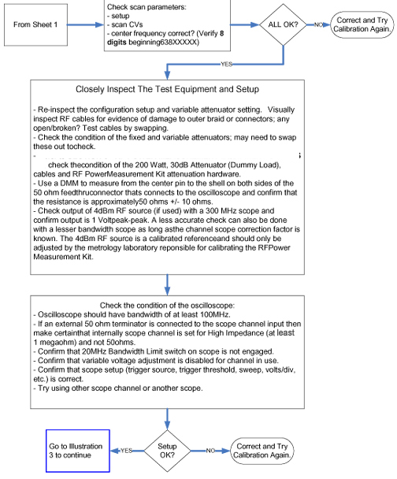
Illustration 3: Main Body and RF Output Troubleshooting Flowchart (Continued)
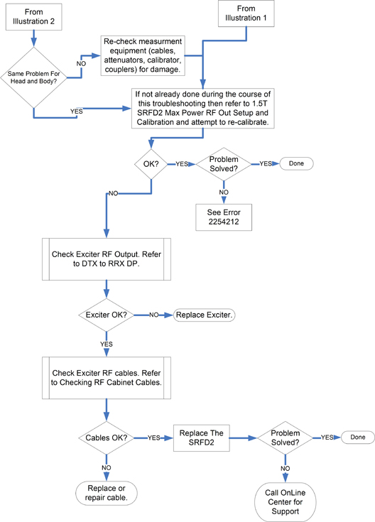
Illustration 4: Main Body and RF Output Troubleshooting Flowchart (Continued)
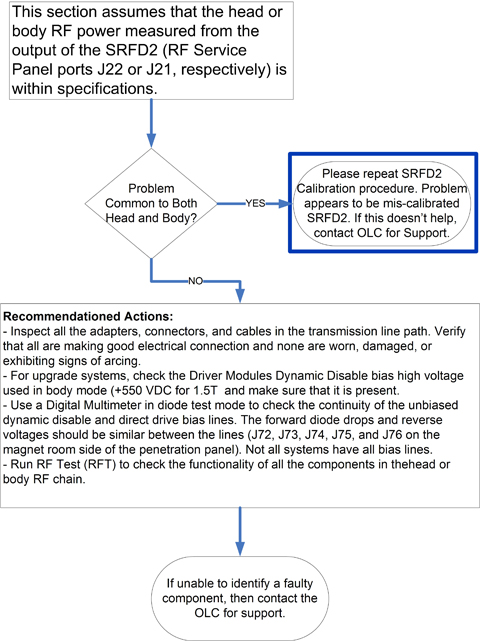
This section contains a list of 1.5T SRFD2 RF fault codes. Referring to Table 1, locate the appropriate system fault code, and proceed to the indicated page. If the fault code is not listed, contact the OLC for support.
Table 1: SRFD2 RF Amplifier Fault Codes
| Fault Code (Click the section link to go to that information.) |
| 2254201, Section 3.3 |
| 2254202, Section 3.4 |
Not Applicable |
Not Applicable |
| 2254203, Section 3.5 |
| 2254204, Section 3.6 |
| 2254205, Section 3.7 |
| 2254206, Section 3.8 |
| 2254207, Section 3.9 |
| 2254208, Section 3.10 |
| 2254209, Section 3.11 |
| 2254210, Section 3.12 |
| 2254211, Section 3.13 |
| 2254212, Section 3.14 |
| 2254213, Section 3.16 |
Not Applicable |
| 2248770, Section 4.1 |
| 2248762, Section 4.2 |
| 2248761, Section 4.3 |
| 2248768, Section 4.4 |
| 2248763, Section 4.5 |
| 2248764, Section 4.6 |
| 2248765, Section 4.7 |
| 2248755, Section 4.8 |
| 2225498, Section 4.9 |
| 2248850, Section 4.10 |
Not Applicable |
Not Applicable |
Not Applicable |
| 2254054, Section 3.17 |
| 2254214, Section 3.17.1 |
| 2254215, Section 3.17.2 |
| 2254216, Section 3.17.3 |
Not Applicable |
| 2248735, Section 4.11 |
Illustration 5: 1.5T SRFD2 Fault Code 2254201 Flowchart
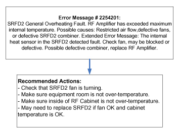
Illustration 6: 1.5T SRFD2 Fault Code 2254202 Flowchart
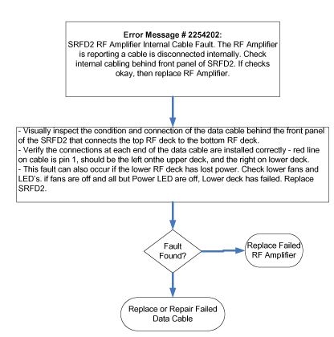
Illustration 7: 1.5T SRFD2 Fault Code 2254203 Flowchart
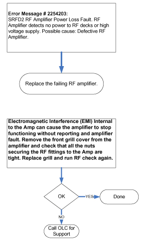
Illustration 8: 1.5T SRFD2 Fault Code 2254204 Flowchart
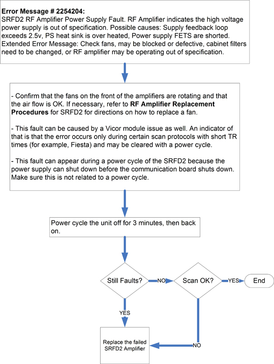
Illustration 9: 1.5T SRFD2 Fault Code 2254205 Flowchart
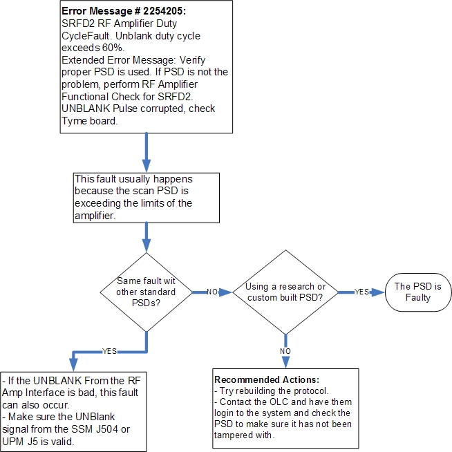
Illustration 10: 1.5T SRFD2 Fault Code 2254206 Flowchart
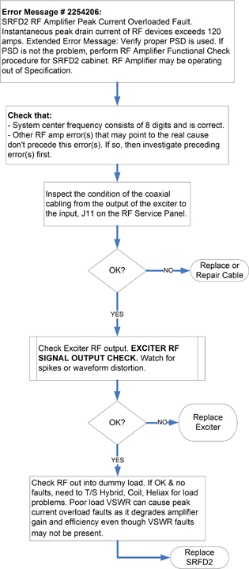
Illustration 11: 1.5T SRFD2 Fault Code 2254207 Flowchart
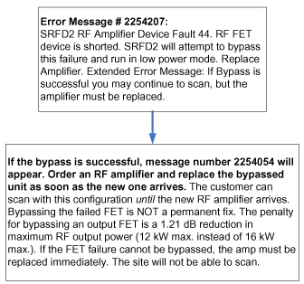
Illustration 12: 1.5T SRFD2 Fault Code 2254208 Flowchart
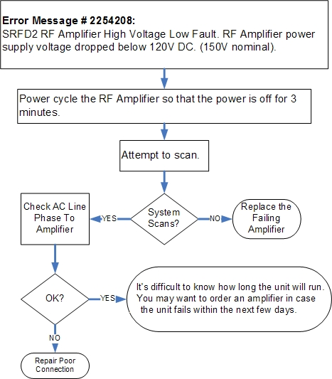
Illustration 13: 1.5T SRFD2 Fault Code 2254209 Flowchart
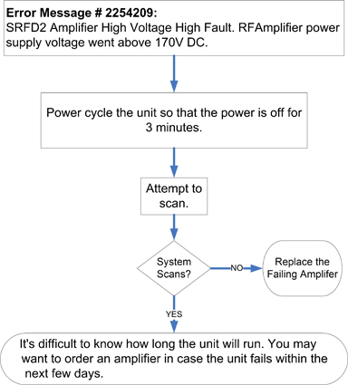
Illustration 14: 1.5T SRFD2 Fault Code 2254210 Flowchart
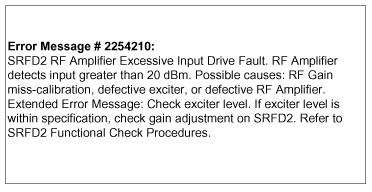
Illustration 15: 1.5T SRFD2 Fault Code 2254211 Flowchart
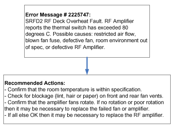
Illustration 16: 1.5T SRFD2 Fault Code 2254212 Flowchart
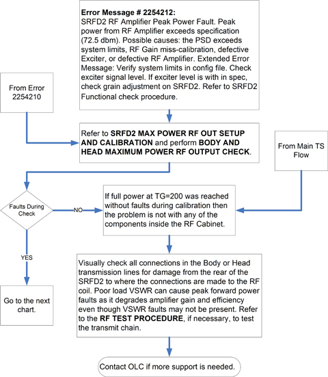
Illustration 17: 1.5T SRFD2 Fault Code 2254212 Flowchart (Continued)
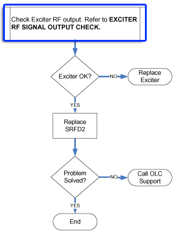
Illustration 18: 1.5T SRFD2 Fault Code 2254213 Flowchart
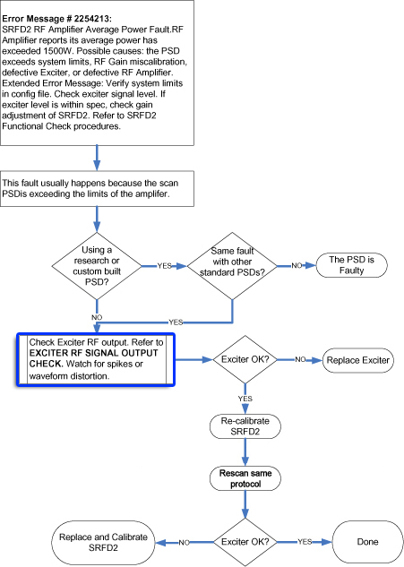
Error Message Number: 2254054 Software Constant: EM_RF_LOW_POWER_STATUS “RF Amplifier in low power state; avoid SE, MEMP, FSE scans.\b\ RF Amplifier has successfully bypassed a fault. IQ may be compromised. Please run prescan again. Scanning can then continue at reduced output levels. Scanning may be limited. Contact FE." Extended Error Message: “Scanning with SE, MEMP, FSE PSD's may be limited, especially with large patients." Logged: Local Host at Operator Viewing Level and in System Status Area at Priority 4
The SRFD2 has the ability to bypass some types of RF FET failures in the event that one should occur. If this message appears in the log, check that it was preceded by Error Message Number 2254207, which indicates a true RF FET failure. The FET failure may have occurred at some point prior to the user first noticing this message about the low power state, and the FET failure message will log only once.
This error message will display every time a TPS reset is performed as a reminder to the operator that scanning is limited until the amplifier is replaced.
The ultimate solution is to replace the SRFD2. The low power state allows the site to continue scanning at reduced output until a replacement is installed.
Illustration 19: 1.5T SRFD2 Fault Code 2254214 Flowchart
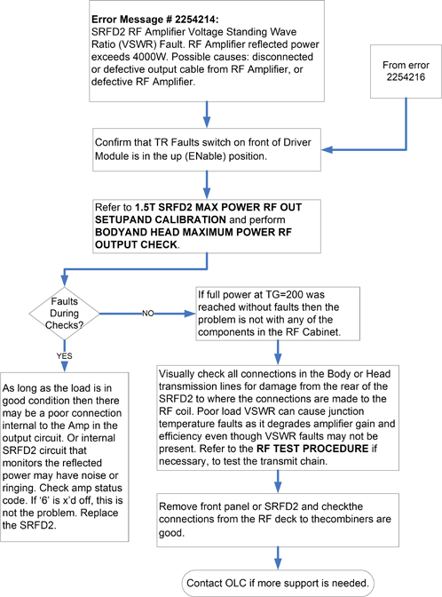
Illustration 20: 1.5T SRFD2 Fault Code 2254215 Flowchart
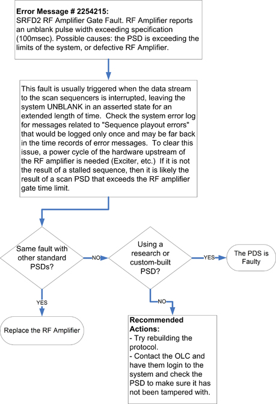
Illustration 21: 1.5T SRFD2 Fault Code 2254216 Flowchart

Software Constant: EM_SPI_RF_MON_AMP_STATE “RF Amplifier Error. The RF amplifier is in an invalid, undefined state. RF amplifier status register read: 0x%02X Please power cycle the RF Subsystem and Reset TPS.” Logged: Local Host at Service Viewing Level
This message indicates that either the amplifier communication was disrupted, and so it is no longer properly executing commands, or the RF Amp Type in the MRConfig file may be wrong.
Software Constant: EM_SPI_RF_MON_INVAL_MODE “RF Amplifier Error. The RF amplifier failed to go into the commanded mode (head or body), or the RF amplifier changed mode when not commanded to change. Present Mode: 0x%02X Requested Mode: 0x%02X Please power cycle the RF Subsystem and Reset TPS.” Logged: Local Host at Service Viewing Level
This message indicates that either the amplifier communication was disrupted, so it is no longer properly executing commands, or the RF Amp Type in the MRConfig file may be wrong.
Software Constant: EM_SPI_RF_MON_WATCHDOG “RF Amplifier Error. The RF amplifier reset watchdog engaged. This indicates either a microprocessor fault condition exists or a cold start is in progress.” Logged: Local Host at Service Viewing Level
If the SRFD2 microprocessor locks up, an on-board watchdog will engage and restart the SRFD2 microprocessor. This message gets logged to let the system know that a self-restart was performed. This is the self-recovery mechanism added to the SRFD2 for the up lockup problems.
Software Constant: EM_SPI_RF_MON_INVALID_STATE_TRANS “RF Amplifier Error. The RF amplifier changed state (powered off, went to standby or operate) without being commanded. Previous state: 0x%02X New state: 0x%02X Please power cycle the RF Subsystem and Reset TPS.” Logged: Local Host at Service Viewing Level
This message indicates that either the amplifier communication was disrupted, so it is no longer properly executing commands, or the RF Amp Type in the MRConfig file may be wrong.
Software Constant: EM_SPI_RF_MON_FAIL_TO_POW_OFF “RF Amplifier Error. RF amplifier failed to power off, in the allotted amount of time, when commanded to do so. Please power cycle the RF Subsystem and Reset TPS.” Logged: Local Host at Service Viewing Level
This message indicates that either the amplifier communication was disrupted, so it is no longer properly executing commands, or the RF Amp Type in the MRConfig file may be wrong.
Software Constant: EM_SPI_RF_MON_FAIL_TO_READY “RF Amplifier Error. RF amplifier failed to power on or go to ready when commanded, or took too long to power on. Please power cycle the RF Subsystem and Reset TPS.” Logged: Local Host at Service Viewing Level
This message indicates that either the amplifier communication was disrupted, so it is no longer properly executing commands, or the RF Amp Type in the MRConfig file may be wrong.
Software Constant: EM_SPI_RF_MON_FAIL_TO_OPERATE “RF Amplifier Error. RF amplifier failed to go to operate when commanded to do so. Please power cycle the RF Subsystem and Reset TPS.” Logged: Local Host at Service Viewing Level
This message indicates that either the amplifier communication was disrupted, so it is no longer properly executing commands, or the RF Amp Type in the MRConfig file may be wrong.
Software Constant: EM_SPI_RF_AMP_TYPE_INCORRECT “RFampType in MRconfig.cfg file does not match RF Amplifier Type determined by SPI. Please update MRconfig.cfg file with correct RFampType. Actual RF Amplifier Type: %01d.%01dT %b” Logged: Local Host at Service Viewing Level
This message indicates that either the MRconfig file is wrong, or the RF amplifier type in the SRFD2 is wrong. If the SRFD2 itself is correct, the “Actual RF Amplifier Type” will read 1.5T SRFD2. The RF Amp Type in the MRconfig file should be set to “10” to make the error go away.
Because this mismatch can cause a host of problems related to command and control timing of the SRFD2, it is best to fix it.
Software Constant: EM_SPI_UNKNOWN_STRING “Unknown Amplifier” Logged: Local Host at Service Viewing Level
This message means that either the SRFD2 is not responding with the correct RF amplifier type code, or the software version on the system does not recognize the RF Amplifier.
Software Constant: EM_SPI_ERB_AMP_ERROR “RF Amplifier fault %02d.” Logged: Local Host at Service Viewing Level
This error message is used for reporting any SRFD2 microprocessor errors. If the SRFD2 watchdog goes off, the reason for the watchdog event is reported by this error message. The “%2d” field above will report one of the following:
Table 2: Condition and Error Codes for %2d Field
| Watch Dog Reset Error Condition | Error Code in “%2d” Field |
| COP watchdog failure | 80 |
| COP clock monitor failure | 81 |
| Unimplemented instruction trap | 82 |
| Software interrupt | 83 |
| Unused timer channel | 84 |
| Unused pulse accumulator | 85 |
| Analog-to-Digital (ATD) converter interrupt | 86 |
| Byte Data Link Communications (BDLC) interrupt | 87 |
| RAM broken | 88 |
| Undefined state | 89 |
| Reserved | 90-96 |
Since the SRFD2 recovers from the up lockup by itself, the purpose of this error message is only to capture the data and requires no intervention by Service.
Illustration 22: RF Power Monitor Fault Code 2248735 Flowchart
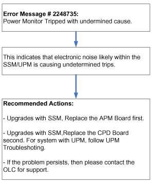
A minimum RF signal level from the RRF Exciter is required, or it will be impossible to meet the specified 16 kW body and 2 kW head RF power output levels. Proceed to verify that the Exciter is outputting at least the minimum amount of power required to the RFI, as described in Section 5.2. That section explains a method using the RF Power Measurement Kit to measure and determine whether or not the RF signal from the RRF Exciter is within specification.
Table 3: Items Needed to Check RF Signal Output from (U)CERD
| Item | Description | Part Number |
| 1 | RF Test Cable Kit | 46-255816G1 |
| 2 | Cannon to BNC Test Cable (included in RF Test Cable Kit) | 46-301549P6 |
| 3 | TPS RF Connector/Adapter and Cable | 46-301927G1 |
| 4 | RF Power Measurement Kit (recommended) | 46-317724G1 or G2 |
| 5 | 100 MHz Scope (equivalent or greater) | 46-183029P61 |
| ||||
| Only use an oscilloscope of 100 MHz bandwidth or greater. | ||||
More accurate measurements are made by using the RF Power Measurement Kit and a 100 MHz oscilloscope. The kit will compensate for any amplitude error due to the bandwidth limitation associated with using a 100 MHz scope. The 1.5T Scope Calibrator provides a 63.86 MHz sine wave at 1.00 VPP (4 dBm).
Verify that the [Bandwidth Limit] button is not selected on the oscilloscope.
Verify the oscilloscope Channel 1 is set to 1 mega ohm input termination.
If using the RF Power Measurement Kit, calibrate the scope by referring to the RF Power Measurement Kit laminated card set.
Look in the upper right corner of each card, and find the card labeled CAL.
Configure the scope according to the illustration on the card.
Follow the directions on the card to calibrate the scope using the 4 dBm calibrator.
Prepare the system to scan in Body mode per Table 4.
Table 4: Scan Protocol: Body Mode
|
| ||||
| If the problem is low and distorted RF output, verify NOW that the system center frequency is correct. Count the number if digits and confirm that the center frequency consists of 8 digits. Since Center Frequency displays without a decimal point, it is easy to omit a digit! | ||||
Disconnect the cable going to J11 on the RF Amp Service Panel.
Connect the cable through a female BNC-to-female BNC adapter to a length of 5 foot (152 cm) coax cable.
Connect the other end of the coax cable to the 50 ohm terminator connected to Channel 1 on the scope.
Select [Manual Prescan] and [Scan TR]. Increase TG to 200.
| NOTE: | Understand that each of the 8 divisions on the scope face is composed of 5 minor divisions. Since 8 x 5 = 40 total minor divisions, count the number of individual minor divisions that the RF waveform spans. Since the input signal is small, minor divisions are used in place of divisions so that a more accurate scope measurement can be made. |
Confirm that the output through the test cable from the J11 cable is ≧25.28 minor divisions.
Decrease TG to 0 (zero) and select [Done].
Reconnect the cable removed from J11 on the RF Amp Service Panel.
If the measured voltage meets specification, the Exciter is working properly. If not, recheck setup, measure again, and replace if necessary.
If the measured voltage meets the specification, the Exciter is working properly and there is no need to continue with this procedure. If it does not meet specification, recheck setup, measure again, and replace if necessary.
Read the following if an RF Power Measurement Kit is not available, and the Exciter output is going to be measured directly with a 100 MHz oscilloscope. Be aware that, due to oscilloscope bandwidth limitations, an Exciter RF voltage reading at 63.86 MHz taken directly from a 50 ohm terminated 100 MHz oscilloscope input channel can be as much as 16% less than the actual Exciter RF output voltage level.
This error is accounted for, and is not a problem, when using the oscilloscope in conjunction with the RF Power Measurement Kit. Reading reasonably accurate 63.86 MHz voltage levels directly from a 100 MHz oscilloscope without using the RF Power Measurement Kit requires one to know the correction factor of the scope channel being used so that the approximate true RF voltage level can be calculated.
The FE can request that the 63.86 MHz correction factor for each channel be determined and reported by the Metrology Lab the next time the oscilloscope is returned for calibration, or
If able to access the 4 dBm (1 VPP) oscilloscope calibrator tool used in the RF Power Measurement Kit, the FE can determine this correction factor.
| NOTE: | See Characterization
for Scopes with <300 MHz Bandwidth for more
information concerning the derivation of the correction factor. Divide
the VPP value read from the oscilloscope by the correction factor
to determine the approximate true RF voltage level value. The simple
formula is: |
Connect the oscilloscope to the system hardware. Confirm that the oscilloscope is properly configured, the Channel 1 vertical Volts/Div variable control is fully counterclockwise, and the [Bandwidth Limit] button on the oscilloscope is not selected.
Ensure that Channel 1 is terminated with a 50 ohm feed-through terminator. Measure with a DMM before using.
Disconnect the cable going to J11 on the RF Amp Service Panel.
Connect the cable through a female BNC-to-female-BNC adapter to a length of 5 foot (152 cm) coax cable.
Connect the other end of the coax cable to the 50 ohm terminator connected to Channel 1 on the scope.
Prepare the system to scan in Body mode per Table 5.
Table 5: Scan Protocol: Body Mode
|
Select [Manual Prescan] and [Scan TR]. Increase TG to 200.
Measure the amplitude of the waveform on the scope.
If using a scope with a bandwidth of 300 MHz or greater, read the peak-to-peak voltage from the scope face and confirm that it is >0.815 VPP (2.21 dBm).
If using a <300 MHz scope, read the peak-to-peak voltage from the scope face and, using the correction factor for the scope channel in use, calculate the approximate true RF voltage value by using the formula:
Confirm that the approximate true RF voltage value is > 0.815 VPP (2.21 dBm).
Decrease TG to 0 (zero) and click [Done].
Reconnect the cable removed from J11.
If the measured voltage meets the specification, the Exciter is working properly and there is no need to continue with this procedure.
For upgrade systems with both RF and System Cabinets, continue to the next step.
For systems with a RFS Cabinet, skip to Step 27.
Open the rear door of the RF Cabinet, and disconnect the cable connecting to the female BNC RF IN feed-through Connector on the inside of the RF Cabinet I/F panel (J1 for SRFD2).
Remove the female BNC-to-female BNC adapter from the 5 foot (152 cm) test cable, and connect the test cable to the female BNC RF IN feed-through Connector on the inside of the RF Cabinet I/F panel (J1 for SRFD2).
Connect the other end of the 5 foot (152 cm) test cable to Channel 1 on the scope.
Select [Manual Prescan] and [Scan TR]. Increase TG to 200.
Measure the amplitude of the waveform on the scope.
If using a scope with a bandwidth of 300 MHz or greater, read the peak-to-peak voltage from the scope face and confirm that it is >0.815 VPP (2.21 dBm).
If using a <300 MHz scope, read the peak-to-peak voltage from the scope face and, using the correction factor for the scope channel in use, calculate the approximate true RF voltage value by using the formula:
| ||||
| Recalibrate the RF subsystem if any cables are replaced. | ||||
Confirm that the approximate true RF voltage value is > 0.815 VPP (2.21 dBm).
If the measured voltage now meets the specification, the cable that interconnects J1 RF IN on the inside of the RF Cabinet I/F panel and J14 on the rear of the SRFD2 is bad. Repair or replace this cable.
Remove the test cable from the female BNC RF IN feed-through Connector on the inside of the RF Cabinet I/F panel (J1 for SRF2).
Reconnect the cable removed earlier to the BNC RF IN feed-through Connector on the inside of the RF Cabinet I/F panel (J1 for SRF2).
Disconnect the cable going to J1 on the rear of the System Cabinet, and connect a coax test cable 5 foot (152 cm) in length to J1. Route the other end of the test cable to the input of the 50 ohm feed-through terminator connected to Channel 1 on the scope.
Select [Manual Prescan] and [Scan TR]. Increase TG to 200.
Measure the amplitude of the waveform on the scope.
If using a 300 MHz bandwidth or greater scope, read the peak-to-peak voltage from the scope face and confirm that it is 0.893 to 1.12 VPP (3.0 dBm to 5.0 dBm). (A voltage level exceeding the 1.12 VPP (5.0 dBm) typical upper limit is generally not a cause for concern.)
If using a <300 MHz bandwidth scope, read the peak-to-peak voltage from the scope face and, using the correction factor for the scope channel in use, calculate the approximate true RF voltage value by using the formula:
| ||||
| Recalibrate the RF subsystem if any cables are replaced. | ||||
Confirm that the approximate true RF voltage value is >0.893 VPP (3.0 dBm).
Decrease TG to 0 (zero) and click [Done].
Reconnect the cable removed from J1 on the rear of the System Cabinet.
Check for poor connections in the cabling or connectors between the System Cabinet and RF Cabinet if the voltage measured at J1 on the rear of the System Cabinet meets specification.
Remove connector from J8 Master Exciter Out on the front of the MUX Board.
Insert the SMB to BNC test cable from the TPS RF Connector/Adapter and Cable Test Kit into J8 Master Exciter Out on the MUX Board.
Connect the BNC end of the test cable to the 50 ohm feed-through connector to Channel 1 on the scope.
Select [Manual Prescan] and [Scan TR]. Increase TG to 200.
Measure the amplitude of the waveform on the scope.
If using a 300 MHz bandwidth or greater scope, read the peak-to-peak voltage from the scope face and confirm that it is 0.893 to 1.12 VPP (3.0 dBm to 5.0 dBm). (A voltage level exceeding the 1.12 VPP (5.0 dBm) typical upper limit is generally not a cause for concern.)
If using a <300 MHz bandwidth scope, read the peak-to-peak voltage from the scope face and, using the correction factor for the scope channel in use, calculate the approximate true RF voltage value by using the formula:
Confirm that the approximate true RF voltage value is > 0.893 VPP (3.0 dBm).
Decrease TG to 0 (zero) and click [Done].
Remove the SMB to BNC test cable from J8 on the MUX Board, and replace the previously removed cable.
Consider replacing the Exciter only if the output is below the specification, and the body RF output power cannot be adjusted to meet the 16 kW specification. Otherwise, check the System Cabinet RF cabling and connectors.
Proceed to Section 8.
This section will provide instructions to check the condition of the low-power RF coaxial cables in the SRFD2 Cabinet. Most cable problems result from poorly attached or damaged connectors. Unless the cable was damaged in some type of accident, it is unusual for failures to occur anywhere else along the length of the cable.
Obtain a Digital Voltmeter (DVM) and set it so that a 50 ohm load can be accurately measured.
Obtain a 50 ohm terminator (46-265874P1) from an RF Cables Kit or the RF Power Measurement Kit.
Measure the female BNC end of the 50 ohm terminator with the DVM, and record the result in Table 6.
Table 6: Measured Resistance of 50 ohm Terminator
| Resistance | _________ohms |
Return to the rear of the SRFD2 Cabinet, and remove the cable connected to J14 RF Input on the rear of the SRFD2.
Visually inspect the BNC connector on the cable for evidence of damage.
Check for poor cable crimps, and confirm that the interface between the connector and cable is not loose or worn.
Confirm that the BNC center pins on both cables are not loose or broken and that none are recessed too far into the connector.
Reconnect the cable removed from J14 RF Input on the rear of the SRFD2.
| NOTE: | The electrical continuity of this cable was already checked in Section 5.2 and will not be checked again. |
From the rear of the SRFD2 Cabinet, remove the terminator from the other end of the cable and reconnect the cable to RF IN on the rear of the cabinet interface (for SRFD2).
Proceed to Section 8.
Faulty RF power measuring equipment can cause inaccurate RF power measurement results, torn or distorted RF waveforms, and RF amplifier faults. This section will provide guidelines for testing and determining the condition of various types of hardware recommended for measuring RF output power.
Remove any cables connected to the 200 watt, 30 dB attenuator (large black or grey unit with metal fins, sometimes referred to as a “dummy load”).
Use a Digital Multimeter (DMM) to measure the center pin-to-center pin and center pin-to-shell resistance of the 30 dB attenuator.
Approximately 95 ohms should display on the DMM when measuring from the center pin of one side of the 200 watt, 30 dB attenuator to the center pin of the other.
Approximately 50 ohms should display on the DMM when measuring from center pin to shell on either side of the 200 watt, 30 dB attenuator.
If values measured are markedly different from what is described above, the attenuator has failed.
If an older gray, rectangular 30 dB attenuator with the metal handle (Bird Corporation Model 8322), it can be repaired in the field.
If a black 30 dB attenuator with the large fins (included in the RF Power Measurement Kit, GE P/N 46-317724P14), try removing the top cover to the unit and checking the electrical solder connections between the center pins of the RF connectors and the internal load. If the connections cannot be resoldered, and/or extensive burn or other damage is found, it will be necessary to replace the unit.
Verify the attenuation value of the 30 dB attenuator by referring to Dummy Load and Cables Calibration, and remeasuring this value. Refer to the RF Kit Calibration Verification portion of the Power Calculator Tool to convert the Magnitude Squared Attenuation Factor derived into decibels (dB).
Check the following:
If using a 100 MHz oscilloscope without the RF Power Measurement Kit to measure power, confirm that all scope measurements are corrected using the correction factor measured for the oscilloscope channel in use. Ignoring the correction factor can result in severe measurement errors.
Confirm that the 20 MHz Bandwidth Limit Switch is disengaged.
Make sure the scope channel used for RF measurements is terminated with either an external 50 ohm, feed-through terminator connected to the channel input connector, or the scope channel selection switch is set so that the channel is internally terminated with 50 ohms. (Both internal and external 50-ohm termination must not be used at the same time.)
Ensure the UNCAL or VAR knob (usually located in the center of the Volts/Div. Knob) is in the fully clockwise, detent position (Off).
Make sure the scope trigger source is set to the channel in use or to an external source.
Check that the channel in use is set for a DC measurement and the correct Volts/Div setting is selected.
Try the other oscilloscope channel, if necessary.
The total attenuation of the RF Power Measurement Kit hardware can be measured, results compared to the specifications shown in the process, and the attenuation value printed on the laminated calibration card 72 for body RF power measurement located in the RF Power Measurement Kit.
Refer to Dummy Load and Cables Calibration and measure the RF Power Measurement Kit hardware as shown in the procedure.
RF Power Measurement Kits suspected of containing faulty components should be returned to a professional, certified Metrology Lab for repair and/or calibration.
The cables supplied with the RF Power Measurement Kit are manufactured to close tolerances, and each was measured during the kit calibration process. Uncalibrated cables should not be substituted into this kit. When measuring RF power with the RF Power Measurement Kit, use only the cables referenced on the laminated cards. Visually inspect cables and connectors for obvious signs of wear and damage that may introduce measurement error. Use a digital multimeter to verify the continuity of the cable connections.
Verify that the system is not scanning.
Reconfigure the system back to a normal configuration.
If the problem was found and resolved, perform one head and one body scan to confirm system functionality.
If the root cause of the problem has not yet been determined, return to the flowchart and continue with the troubleshooting process.